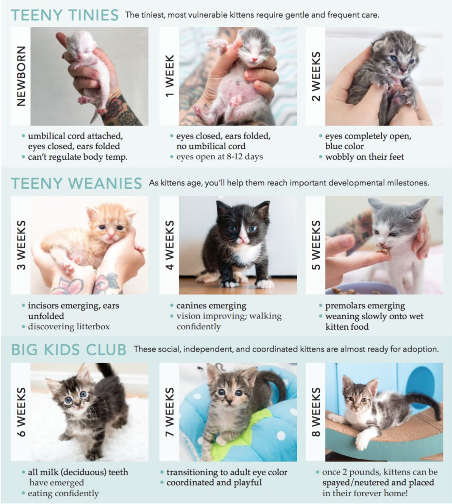

The Basics
We have the same requirements for our foster parents as we do our adopters. Resident animals must be up to date with vaccines, and
on heartworm prevention (for dogs).
This is as much for your animal's protection as it is for ours. We also require all
foster dogs and cats to be kept as indoor pets. We expect foster homes to treat and love their furry wards as they would their own
resident animals. Regular food, water, and supervision are obvious requirements.
You are our eyes and ears on this animal. If
the cat has needs... behavioral or medical, we look to you to be their advocate and ensure their needs are met.
Owner Surrender
Our TNR Program (Cats)
Appomattox Animal Control
Amherst Animal Control
Amherst Humane
Society
Campbell County Animal Control
Bedford Animal Control
We generally do not “pull” (meaning take
animals in) from LHS because they are already a no kill facility so it is logical to put our energy towards supporting the animals
in county facilities who are at risk for euthanasia.
Just because the facility is not listed here, doesn't mean that they are
off limits. If you are willing to work out transportation, the sky's the limit. One advantage, however, of pulling animals from
known facilities is that we have a relationship with the volunteers and staff and we have reliable contacts to do temperament
testing. We also take in animals from Craigslist and online yard sale sites.
Don't worry, everyone goes on vacation and we don't expect you to stop once you are a foster parent. Your foster animal can stay in
an alternate foster home. We have a volunteer facebook page that
foster homes frequently use as a means of finding temporary respite for their furry wards.
As soon as you know you will be on
vacation, reach out to your mentor, and post on the volunteer page so a suitable place can be found. Many times foster families
become close friends and watch one another's fosters when the need arises.
Every animal is different and so what you can expect is different. Even with a well-adjusted dog or cat who has been a loved member
of a family may experience some stress and challenges transistioning to your home.
Dogs might have accidents on the floor
(even with frequent walks) as the dog learns a new routine and you learn his “signals”. There will probably be some whining and
clingy behavior. He will probably not eat the first day. Your resident dog may constantly want to play, or on the flip side growl
and be irritated that another dog has taken over. You can expect nearly every foster dog to whine and fuss in the crate overnight at
first.
Cats will likely be quite shy and maybe even scared initially. When bringing home a cat who's unfamiliar to your home,
we always recommend to first contain them in a spare room, bathroom or even in a dog crate/cage. While it may seem cruel to keep
them cooped up for the first 24-72 hours, it is absolutely necessary and will allow the cat to feel safe and adjust to your home
more effectively. Be patient and take it slow, cats tend to do things at their own pace and on their own time.
Those who has
never been a “pet” like hunting dogs or a stray cat who has only lived outside, you can expect a rockier adjustment period. Being
confined inside with new sounds, stairs, no manners as far as stealing food from counters, are not house-trained/litter trained, and
may dislike containment in a crate. Some have never even been on a leash or know the difference between a dog toy and your favorite
pair of shoes.
That being said, everyone will come across problems that they don't know how to handle. That's where asking
for advice and talking with your fellow foster families can be extremely useful. If you incur a problem, don't wait until you are
frustrated to seek help. We are HAPPY to help!!
This is of course a very broad question because all organizations are run differently. Part of what makes us different is our very
relaxed nature. Volunteering is supposed to be fun. Our group has a very family feel to it. We don't have strict rules or
formalities. No one volunteer is more important than another. We are all here to have fun, make friends, and save some lives. We
don't do drama. We don't get caught up in rivalry. We believe in teamwork. We try to always be kind to one another, welcoming to new
faces and always appreciative of every member of this group.
We believe YOU are best one to judge which animal is right for
you home, which is why, with a bit of guidance at first, foster families choose the animals they want to pull. Along the same lines,
you also have the final say on who adopts the animal. We want you to feel 100% confident with where this animal is to spend the rest
of his life. You know him. You are invested in him. We trust YOU to be the best judge.
Another way we are different from many
rescues, is that we don't just take in the “easy to adopt” animals. While we try to keep a variety of animals in our care, we are
dedicated to assisting as many special needs animals as our space, budget, and resources allow. There are NO paid members of this
organization. Another unique feature of CVRR is that we post our profits and losses monthly. We are as transparent as we can
possibly be and welcome any financial inquiries. The first 30 minutes of our monthly board meeting is even open to the public so
everyone has an opportunity to ask questions of the board.
Young kittens tend to be adopted within 1-2 months. Older kittens and young, adult cats are usually adopted within 3-6 months.
Older, adult cats can take longer to be adopted, depending on their personality.
Small breed adult dogs are usually adopted
within 2-4 weeks (small seniors average between 3-6 months). Medium and large sized mixed breeds (which are not bully breeds or
large hounds) usually are adopted in 3-6 months (seniors are closer to 6-12 months). Most medium and large purebred dogs between 1-3
months. Bully breeds and hounds over 35 pounds average 6-12 months. Puppies tend to be adopted within 2 months.
It's not an
exact science. Much of how fast an animal is adopted has to do with how many pictures, videos, cute stories you provide. Some of it
is just dumb luck. Sometimes wonderful well- adjusted dogs and cats sit for months with no interest.
Because we have no facility, we want you to feel as confident as possible that the foster you choose is a reasonably good match for
the relatively short amount of time that he will be with you. Consider choosing a foster that is well-rounded and an easy keep. That
way, if there is a reason it does NOT work out, it is easier to find an alternate foster family. That said, we want you to view this
as a real commitment. We do not like to play musical fosters just because a foster's personality is not to your liking.
In
the case of aggression, inner household issues between resident pets and fosters, cat chasing, or if for some reason your home is a
danger (i.e., routinely escaping), we will either shift the animal into another foster home better-equipped for the issue, or return
the animal to the shelter.
Fostering is very much “learn as you go”. As each foster comes into your home, you will develop
more and more of a “type” that you will seek in the future. The important thing to remember is that this is a temporary commitment.
And that while a dog or cat may not be “YOUR type”, there is inevitably the perfect home out there waiting for them.
CVRR can supply your animal with as much or as little as you would like. We have crates, beds, food, heartworm and flea and tick
prevention, collars, and leashes, litter boxes and litter at our disposal. We provide all the veterinary care, both routine and
emergency/sick.
Some foster families choose to supply their own food so the animal stays on a consistent brand or simply as a
donation. Others provide a leash and collar for each animal. We welcome these donations but are also perfectly happy to care for all
the animal's needs.
Adoption events where the public can meet them are a great means of promoting him. Feel free to send any new updates, photos, or videos to your mentor, and they will add them to the animal's website profile as well as social media.
If they appear to show a history of good, up-to-date vet care and in other respects seem ideal for adoption, the next consideration is if they are the right family for this specific animal. Sometimes the family is fantastic, but not for the animal in which they have interest. You know your foster best, and what needs will entail.
However, I would encourage you NOT to make that judgment based solely upon the application. Very frequently a phone conversation or even an email will give you a MUCH better idea of if the adopter is well matched for the animal. It's 100% fine just to talk with them, answer any questions they have (alongside asking your own), then end the conversation by thanking them for their time and telling them that you will be in touch.
Sometimes you will have more than one good applicant for a foster. We encourage you to speak with both and decide from that information obtained during that conversation in conjunction with what they provided in the application. If you so choose, you can even have both families meet the animal before making a decision (if both are local).
Once you decide on an adopter, one of our adoption counselors will come assist you and walk you through your first adoption. You can familiarize yourself with the outlines of our contract prior to meeting the family. Amongst those agreements, that the adopter will return the animal to us if at ANY point they are unable to keep them. We also offer adoption trials with a non-refundable deposit. If they adopt, that money is applied to the standard adoption fee.
Some handy things to go over with the adopter:
- What to expect the first week.
- What food he is eating...how much, what time, and where.
- How to introduce him to resident cats/dogs/children.
- Suggest a wellness visit with their veterinarian in 30 days. Remind them to bring their health record with them so their vet is aware of vaccines and any other vetting or test results performed while in our care.
- Discuss his microchip.
- Remind them that if at any point they have questions or problems, they should call or email us and we are more than happy to help in whatever way we are able.
- Don't forget the “happy tails” picture.
Foster Checklist
All animals need to be approved before intake. If you see a dog, cat, etc. and want to foster, contact Laura or Susan. If we
receive an animal from a shelter, you will be asked to sign as a CVRR representative. Please keep and upload that form! If you
receive an animal due to an owner surrender, you may be asked to facilitate the intake paperwork. This is a digital form so please
verify that it is on file before accepting an animal into your care.
Intake forms are on the main website here.
(Tags apply to dogs only, microchips are for all)
Before anything else, please put a CVRR tag on your dog
foster! You can get these from Laura or Susan. Also, get a microchip implanted ASAP so we can register the animal in case it gets
lost. Upload a picture of the chip number barcode as a file in Rescue Groups and add the chip number to your
foster's profile. Your dog foster should wear a martingale collar if shy or a very secure collar that cannot slip over its head.
Upon adoption, Jessi Burns or Debi Martin will register the chip to the new owner.
This information is to be kept and maintained by you, the foster. We use Rescue Groups (RG) (or Airtable if you
have had training) for health records. Every vaccine, deworming, vetting, and medical care should be recorded in Rescue Groups as
“Journal Entries”.
If you know your foster needs a vaccination of any kind (DHPP, FEVCR, bordatella, rabies) or a microchip,
please notify us and we will get someone to administer those. Those do not require vet visits as we have several volunteers who are
skilled in this area. Spay/neuter and rabies vaccinations require a vet visit. Contact Susan Stanbery, Debi, or Laura if your foster
needs a vet appointment. Upon adoption, the Health Record (aka Journal) is to be emailed to the adopter.
The foster is the one who applies monthly flea/tick treatment and administers de-wormer. Please note the type and the dates in Journal entries in Rescue Groups. You can obtain these medications from Laura, Susan Stanbery, or Kristin.
If your foster goes to the vet for any reason, please acquire the treatment records, scan and upload them to the files on your animal's profile page in Rescue Groups. When uploading a file to RG use the Description box to name the file (E.g. rabies, microchip, spay/neuter). Consider using a free scanner app for either Android or the iPhone Notes app to scan documents to a PDF. Please ask if you need assistance.
Take cute pics of your animal and post them in the CVRR Volunteers Facebook group with information we can use to promote your foster on the main page. Plus, it's nice to see our fosters so we can recommend them to other applicants. Upload pics of your foster into RG using “Media”.
Post in the CVRR Volunteers group when your foster is going on trial and/or gets adopted. When your foster goes on trial or gets
adopted, please have the adopter fill out an adoption contract (choose the appropriate one, dog or cat), making sure the L-number
(dogs) or G-number (cats) and microchip number are both present and correct. If an animal is going on a trial adoption and collect
the $50 non-refundable fee for dogs and $20 for cats.
We use AirTable to automate digital adoption contracts and health
records. Open this Dogs Link or the Cats Link and locate your dog/cat. Open the field, scroll down
until you see “Contract in Person” button or the "Prefilled Contract" button. You can fill out the contract ahead of time and send
the link to the adopter or fill it out with the adopter on adoption day.
Code of Conduct
Comply with both the letter and the spirit of any training or orientation provided to you by the CVRR in connection with those responsibilities.
Take responsibility for your actions and decisions. Follow reporting lines to facilitate the effective resolution of problems. Ensure that you do not exceed the authority of your position.
Acknowledge that the choices you make, actions you take, and words that you use when you are a known member of CVRR affects not only you, but the entire group. Always be an advocate, not only for animals but for lawfulness, kindness and tact. This includes both in life and the “virtual world”. Repeatedly behaving in a conduct not conducive with the spirit of CVRR will call for a vote by the board of directors and possible expulsion as a volunteer.
Personal harassment means any conduct whether verbal or physical that is discriminating in nature, based upon another person's race, colour, ancestry, place of origin, political beliefs, religion, marital status, physical or mental disability, sex, age or sexual orientation. It is discriminatory behaviour, directed at an individual, that is unwanted or unwelcome and causes substantial distress in that person and serves no legitimate work-related purpose.
CVRR has a zero-tolerance policy with respect to Personal/Sexual Harassment. Personal/Sexual Harassment in any form is strictly prohibited and may be grounds for termination as a volunteer.
Fostering Dogs
- Pacing, whining, staying stuck to you like velcro or sometimes hiding
- Your dog may constantly want to play with the foster until the novelty wears off
- Your dog may growl at the new addition
- Your foster will have accidents on the floor until he learns the routine
- Your foster may be uncomfortable being inside if he has only been an outside dog
- Your foster may not know how to climb stairs or be intimidated by your steps in particular
- Your foster will probably be loud in the crate at first, or he may be very quiet and start with then loud once he settles in.
- Your foster may not eat the first 1-4 days
- Your foster may chew, as a way to relieve anxiety and stress
- Do not shower your foster with attention. There is a lot of adjustment and change happening. Giving him time and space to relax without distraction or interference is helpful. He needs to see you as the leader of the household. Showering him with too much attention could potentially confuse him as to who the boss is. With the absence of a strong leader, some dogs try to step up to fill the void and are NOT good natural leaders. The extra stress causes them to exhibit behavior problems and anxiety.
- Do not leave your kids unattended with the animal Regardless of any temperament test that has been done, we do NOT know this animal. Until your foster knows the hierarchy and can be observed with the animal in various situations over a period of time, do not take unnecessary risks.
- Do not leave your pets unattended with the animal Just like with your human children, we do not want you to put your fur babies in unnecessary risk either.
- Do not feed him in the open where food aggression could be an issue or give any bones or toys immediately. Again...safety and careful observation is prudent. We want to set both your family AND the foster up for success.
It is important to note that each foster maintains a health record for the foster animal. We will do this through the Rescue Groups
website. The records should include dates and types of vaccines given based on any prior records and while in our care. It is
imperative that these records are kept accurate and sent via email to the adopter upon adoption (or prior to).
Age Appropriate Vetting Required before Adoption:
DHLPP
Bordetella
Heartworm Test
Dewormed
Rabies
For Adult dogs:
*If we do not know their past vaccine history:
2 DHLPP vaccines 3-4 weeks apart
*If the animal has had vaccines in the past but is not up to date:
1 DHLPP vaccine
Puppiesreceive DHLPP every 3-4 weeks beginning at 7 weeks with the last booster at 16 weeks.
Rabies is
frequently done at the same time as spay or neuter. There are several people in the group who can implant a microchip into your
foster dog. This should be done immediately along with obtaining a collar and CVRR tag in case the animal gets loose.
If an
animal has an illness, many medications we may have “in stock” or be able to obtain without the animal seeing a veterinarian (we
have several experienced veterinary technicians on our team). However, if it is beyond the safe scope of our knowledge to treat, we
will make an appointment for the animal to be seen at one of the veterinarians that we work with routinely. We count on you to be
your animals advocate.
Dog Medical Issues
Kennel Cough is also extremely common in shelter dogs. There is a vaccine (bordatella) that we recommend your resident dog receives
annually for KC. Unfortunately, even with the vaccine on board, there is still a reasonably good chance of your dogs catching the
virus at some point in your fostering “career” because it is SO contagious and SO common.
The vaccine tends to shorten the
lifespan and severity of the virus but sometimes does not prevent it entirely from occurring.
The good new is that it is
essentially the doggy version of the common cold, and unless your animals are very old or have a compromised immune system, they
should kick the bug in a week or so with no lasting effects.
If your resident animal does catch kennel cough and you feel
that he needs a cough suppressant or medical intervention of some kind, we are happy to provide care at no cost to you.
Kennel cough sounds like the dog has “something stuck in his throat”—sometimes they gag and spit up phlegm. Some will cough
seemingly non-stop for the first few days of the virus and as time goes on, it will lessen. Toward the tail end, the coughing will
mainly be in conjunction with exercise.
Remember that this is an airborne virus so do NOT take your dog out except to potty
while he is coughing or you will likely spread his cooties. At no point should this virus affect his appetite and usually they are
still mostly active. If you are concerned, always call.
Less common, but potentially very dangerous is Parvo Virus. Unlike the vaccine for Kennel Cough, the Parvo vaccine (part of your
DHLP/P shot) will protect your dog 100 percent from contracting the virus.
Unvaccinated dogs are absolutely at risk,
which is why we require vaccines be UTD in resident dogs.
What's important to know about Parvo (for the purpose of
fostering) is that it is a very hardy virus. Parvo virus has been known to live in soil for a decade. That means that if you ever
house a puppy who is sick with parvo, any unvaccinated dogs who share the same areas will be at risk.
Indoor areas should be
cleaned and disinfected in a mix of 10 percent clorox/water, and animals should not be walked in the same area as a puppy who
possibly shed parvo virus in the spoil. We do not generally house puppies with parvo in our “standard foster homes” but if you do
have a puppy who is ill and a suspect for carrying a virus, keep him in an area that is small and easy to clean, spray off the
bottom of your shoes with diluted clorox when exiting the area. Wash your hands immediately.
Soiled blankets should be bagged
and tied closed until they can be put directly in the washer with detergent and diluted clorox. If you handle the puppy and your
clothes have been soiled, change immediately upon exiting and wash your clothes. Ideally a “wrap around” or scrub top should be worn
then immediately removed each time you enter and exit. (a robe works well in a crunch).
Intestinal Parasites are common in animals that come in from the shelter. Luckily, your dogs already receive a monthly dewormer
every time they take their monthly heartworm prevention.
Heartgard covers the more common intestinal parasites roundworm and
hookworm.
Sentinel covers those and the addition of Whipworms which are less common but by no means unheard of. It's
especially important to check a stool sample on resident dogs annually to be sure they do not have whipworms when your resident dog
is taking heartgard rather than sentinel.
Tapeworms come from fleas and are not passed from canine to canine in any way.
Roundworms look like spaghetti and are common in puppies especially, hooks and whips are not visible in the stool. Tapes look like
rice. Want to know more about worms and who doesn't, really? Learn more on PetMd

Dog Behavorial Problems
This is an annoying, common problem. Most males that come from shelters are not neutered. Even if we immediately neuter the animal
upon intake it takes6 weeksfor testosterone to totally dissipate (although usually much better within 10 days-2
weeks) and in some cases, in older males, it is simply a matter of habit. In males under 1, it is usually less of a problem.
Un-neutered males should be treated like unhousebroken puppies. Make frequent trips outside to keep that bladder empty, supervised
anytime they are not crated (utilize baby gates and tethers to keep them near you). When they attempt to mark, clap your hands and
make a loud NO then take him immediately outdoors and praise. Cleaning the area with a urine neutralizer like Natures Miracle is
important. A mix of vinegar and water can be used in a pinch to clean and disinfect. Belly bands can also be utilized to protect
your furniture (I line them with sanitary napkins to save from having to wash it constantly)
Most shelter dogs are not house-trained when they arrive in foster care. Fortunately, adults are usually much easier to house train
than puppies because they have mature bladders so once they get the idea of what is expected, they tend to give cues for a longer
period of time before having an accident. House training 101 is done in 4 weeks.
Week ONE...Total doggy lock down
For an adult, walk every 2 hours (puppies hourly or even every half hour if
drinking a lot). Set a timer. If you take them out and know they need to potty, but haven't (i.e., first thing in the morning), put
them in the crate for 10 minutes then walk again for 5 min. Still no potty? crate 10 minutes, out for 5. Dogs are easily distracted.
It doesn't mean they are being defiant. Be boring. Take them to the same area. Don't play. BIG party and tasty treat the moment they
potty. Do not give him the freedom to wander until he has relieved himself. Keep a “potty log” indicating every time he relieves
himself and where so you can start to note trending. He should never be more than 15 feet from you unless crated. You can also use
10 foot leashes and tether them to chairs (like if you are sitting at the computer). If you have a fenced in yard you should not be
allowing him free access to it unsupervised because then you have no idea when he has relieved himself.
Week TWO...Lockdown 2.0
For an adult, walk every 3 hours (puppies every hour or hour and a half if drinking a
lot) Set a timer. If you take them out and know they need to potty, but haven't (IE first thing in the morning), put them in the
crate for 10 minutes then walk again for 5 min. Still no potty? crate 10 minutes, out for 5. Do not give him the freedom to wander
until he has relieved himself. Keep a “potty log” indicating every time he relieves himself and where so you can start to note
trending. If he did relatively well last week, you can try to utilize baby gates this week rather than tethering, but he should
still never out of sight unless crated. If he is a little slower picking up on house training, that's ok...stick to tethering again
this week as well. If you have a fenced in yard you should not be allowing him free access to it unsupervised because then you have
no idea when he has relieved himself.
Week THREE...A taste of freedom
For an adult, walk every 4 hours (puppies every 2 hours) Set a timer. Hopefully
by now he is getting down to business promptly when you take him out without having to bounce back to the crate. Keep a “potty log”
indicating everytime he relieves himself and where so you can start to note trending. Keep using your baby gates this week. If you
have a fenced in yard you should not be allowing him free access to it unsupervised because then you have no idea when he has
relieved himself.
Week FOUR...Testing
Continue walking every 4 hours (2 hours for puppies). Set a timer. Maintain your log. You
can start to spread your baby gates out a little so the dog has a little more freedom but if there is an area he preferred to
eliminate in (like a guest room) still deny him access. Continue giving treats when he potties appropriately. You can start allowing
him time outside unsupervised but watch for the first few minutes to make sure he is eliminating.
- If your foster is pooping more than the number of meals he eats (usually 2), then you usually have an issue with either too much food, the wrong kind of food (even if its quality, may just not agree with him), or parasites.
- Your foster should not be eliminating in his crate. If he is see section on crate issues.
- If he is asking to go out overnight make sure that you are acting only as transportation to the outdoors...this is not fun time. Try taking up water a few hours before bed or push dinner a little later or earlier.
- Look at the food you are feeding. Junk food tends to be higher in sodium. Sodium makes you thirsty. What goes in will come out.
- Always use the same cues “do you want to go out” then straight out.
- Don't lollygag outside. You don't want them to get the idea that they have all day to do their business. Five minutes is enough.
- House training is training yourself to pay attention and maintain a schedule...he will catch on.
- If you catch him having an accident, loud noise to startle/interrupt then outside.
- If you find a puddle or a pile and he is done, do not punish him as he will have NO idea why you are yelling. Clean it up and pay more attention next time.
- For more tips go here
Fostering Cats
It is important to note that each foster maintains a health record for the foster animal. We will do this through the Rescue Groups
website. The records should include dates and types of vaccines given based on any prior records and while in our care. It is
imperative that these records are kept accurate and sent via email to the adopter upon adoption (or prior to).
Age Appropriate Vetting Required before Adoption:
FVRCP vaccine
Dewormed
Rabies
Flea/Tick
Prevention
FeLV/FIV combo test
For Adult cats:
*If we do not know their past vaccine history:
2 FVRCP vaccines 3-4 weeks apart
*If the animal has had vaccines in the past but is not up to date:
1 FVRCP vaccine
Rabies and FeLV/FIV combo test are
frequently done at the same time as spay/neuter and microchip because it must be done by a veterinarian.
Kittensreceive FVRCP vaccine every 3-4 weeks beginning at 7 weeks with the last booster at 16 weeks; they will
receiveat least 2 shots. Kittens cannot be spayed/neutered until they are at least 2 months old (8 weeks) and weigh
at least 2 pounds. Kittenscannotreceive a rabies vaccine until they are 12 weeks old, and therefore, it's often
desirable to wait and schedule their spay/neuter at 12 weeks old so they can receive rabies in the same vet visit.
Cats must
never be allowed to “free roam” or be around other cats until they have been combo tested.
If an animal has an illness, many
medications we may have “in stock” or be able to obtain without the animal seeing a veterinarian (we have several experienced
veterinary technicians on our team). However, if it is beyond the safe scope of our knowledge to treat, we will make an appointment
for the animal to be seen at one of the veterinarians that we work with routinely. We count on you to be your animals advocate. If
you think he is ill, please contact Meghan, Laura, or Dani. If he needs a booster vaccine, dewormer, or flea/tick treatment, please
contact Meghan or Jillian.
We have several veterinarians that do pro bono work for us, but the vast number of animals go to Riverside Veterinary Hospital.
Laura handles all the S/N appointments. She will ask you when it will be convenient for you to take your animal for his appointment
& make the date accordingly.
Drop off is between 8-9 a.m. & pick-up is either at the end of the day, or alternatively the
following morning. If your work doesnt allow for transportation then you can post on our volunteer FB page and see if another
volunteer is able to transport that day.
When your animal goes to his S/N appointment, he doesNOTreceive any
breakfast that morning. Water is okay. When you arrive at Riverside, tell the front desk that you have a CVRR cat that has an
appointment; they will ask for the cats name and G#, as well as when you will be picking the cat up.
If you elect to pick up
your foster cat the same day, he will be groggy (think one too many shots of tequila). You will need to confine him somewhere quiet
so that he can rest/recover for the remainder of the day and night. A crate or bathroom is ideal. A few hours after he arrives back
home, you can offer a small meal, then about 3/4 of his normal meal that night.
Contact Laura, Dani, or Meghan immediately if
the animal appears to have any complications or adverse reactions. Attempt to keep the animal relatively quiet (and not running
crazy) while he heals over the next few days. Each day you should peek at the incision. If you notice a lot of redness, swelling or
discharge at the incision site, or the animal is licking frequently, contact Dani or Meghan.
We are partnered with several local vet offices and animal grooming businesses who have adoption cages available for us to place
adoptable cats. This gives them more exposure to the public, increasing their chances for adoption. Typically, we rotate our cats
into adoption cages, allowing them to go on “break” with a foster for a few weeks if they are stressed out or have been in a cage
for about a month without getting adopted.
We have adoption cages at the following places:
Lake Forest Animal Hospital
(Forest) - 2 cages
Seven Hills Animal Hospital (Forest) - 1 cage
Pawfection (Forest) - 1 cage
Pet Craze (Forest) - 1
cage
Animal Emergency & Critical Care (Lynchburg) - 1 cage
Petsense (Madison Heights) - 2 cages.
Cat Medical Issues
- Monitor your foster's overall health.
- Note any change in appetite, appearance, & attitude.
- Watch for any signs of upper respiratory infection sneezing, runny/goopy eyes, coughing, nasal discharge.
- Watch for any other signs of illness excess itching, rash, vomiting, fever, etc.
CVRR keeps a lot of basic medical & veterinary supplies on hand, such as:
- Flea & Tick Treatment
- Parasite Treatment/ Dewormer
- Antibiotic Eye Ointment
- Lysine & Bene-bac
All veterinary care must be approved.If the Cat Coordinator or foster strongly believes the cat needs to be seen by a veterinarian, then the Cat Coordinator will line up at appointment with one of our veterinary partners. In the case of emergency outside of business hours for veterinary offices, then arrangements can be made for your foster to be seen at the local emergency vet (AECC). If an emergency situation arises and you are unable to reach the Cat Coordinator or another contact, then please use your best judgement for taking your foster to the emergency vet.
General Guidelines for Seeking Vet Appointments
Kittens younger than 12 weeks must see a vet for the following:
- Persistent diarrhea that lasting for more than 2 days
- Vomiting and diarrhea for more than 1 day
- Vomiting more than once in an hour
- Not eating for more than 12-24 hours
- Lethargy without fever for more than 12 hours
- Lethargy with fever
- Diarrhea that lasts for more than 1-2 days
- Diarrhea and occasional vomiting for more than a day
- Vomiting more than 2-3 times in an hour
- Not eating for more than 24 hours
- Lethargy without fever for more than a day
- Lethargy with fever
True, life-threatening emergency:
(needs to be seen ASAP)
○ Seizures, hit by car or other blunt force trauma, total
inability to stand up, severe respiratory distress with frantic gasping for air, profuse bleeding or large open wound, minimal
movement with pale white gums.
Emergency
(should be seen same day or within a few hours):
○ Difficulty breathing, vomiting more than 4 times in 1
hour, possible broken limb with no other signs of trauma (i.e. step on cat's foot), bloody diarrhea, extreme and unusual
lethargy.
Minimal Emergency (can wait 12-24 hours):
○ Limping, sneezing, runny nose, coughing, intermittent diarrhea, open mouth
breathing that coincides with upper respiratory infection, congestion, intermittent vomiting, single episode of a seizure.
Non-emergency:
○ Cold symptoms (sneezing, runny nose or eyes), conjunctivitis of eyes, small bout of diarrhea for a day,
vomiting once or twice, decreased appetite, minor limping.
Moms & Kittens
Caring for a mom and her kittens is a very rewarding experience. And the best part is — mom does it all! She cleans up
after her babies, keeps them warm and maintains their feeding schedule.
○ Caring for Mom. More than anything else,
a mother cat needs a calm, quiet environment to raise her family. If the mother cat is healthy, chances are, she will be able to
take care of her babies without much assistance from you. Your goal as the foster parent is to make sure she stays healthy and serve
as a back-up if there is a part of parenting she cannot do on her own.
○ Give Them Space. Even the sweetest cats can be
protective of their babies, so give the mom time to trust you. For the first couple days, only visit the family a few times to
ensure the babies are nursing and the mom appears healthy. Once you have earned the mother's trust, you can start interacting with
her babies.
○ Alleviate Stress. The more stress mom endures, the less she will be able to do for her babies. This includes
feeding them & caring for them properly. To minimize stress on the mother, never take the family out of your home or out of your
designated foster space. Ask that only the people directly involved in her foster care interact with the family. As the kittens get
older, you can welcome more people to interact with them.
Feeding Pregnant & Nursing Cats
Mama cat requires extra nutrition for adequate milk production. Feed a premium
diet three times each day. Kitten food is given to nursing moms to provide them extra nutrients. Nursing moms will typically be thin
and will sometimes have an unkempt coat while nursing. Be sure all the kittens are nursing and steadily gaining weight. Newborns
depend entirely on mom's first milk, receiving valuable antibodies (colostrum).
Medical Care
Call your Foster Coordinator if you see any signs of illness in mother or kittens. If the mother
cat goes off food or is stressed, milk production may drop sharply, and kittens may have to be raised as orphans. Check mother's
mammary glands daily for redness, harness, discharge or streaking color. A hard, red, hot or painful mammary gland may mean mastitis
which should be checked by a veterinarian. Contact your Cat Coordinator if you believe your nursing mother has this
condition.
As long as the kittens all nurse and gain weight, milk production is probably adequate. If milk production or
mother's calcium reserves are inadequate, the mother may develop eclampsia, an emergency situation of low blood calcium levels
requiring immediate attention. Symptoms include muscle twitching, tremors, anxiousness, progressive or stiffening, seizure-like
tremors.
To help the mother care for her kittens, keep an eye on them regularly and be ready to jump in when the mother is not able to do it all.
| Mom's Role |
|---|
| Bathe the babies by licking them |
| Stimulate the babies' urination and defecation by licking their genitals and anal glands |
| Nurse the babies every 3-4 hours |
| What To Do If Mom Isn't Able |
| Wipe the eyes and nose with a warm damp cloth to clean discharge |
| Wipe the genitals and anal glands with a warm damp cloth until they urinate and defecate |
| Bottle or syringe feed the babies every 3-4 hours |
| What to Monitor |
|---|
| Weight |
| Firmness of Mammary Glands |
| Energy Level |
| Congestion |
| Eye and Nasal Discharge |
| Positive Signs |
| Weight stays constant or increases |
| Mammary glands are soft to the touch |
| Energy level stays constant or increases. (If already sick, energy level must increase.) |
| Congestion decreases |
| Discharge decreases |
| Negative Signs |
| Weight decreases |
| Mammary glands are firm to the touch |
| Energy level decreases. (If already sick, energy level must not stay constant or decrease.) |
| Congestion increases |
| Discharge increases |
| How to Minimize the Negative |
| Increase food intake by feeding more often and/or provide more food during each feeding |
| Use humidifier or steam of the shower to clear up congestion |
| Wipe eyes & nose with a warm, damp cloth two or more times a day as needed |
| What to Monitor |
|---|
| Weight (take and record daily) |
| Urination and Defecation |
| Energy Level |
| Congestion |
| Eye and Nasal Discharge |
| Positive Signs |
| Weight increases |
| Stomach is soft to touch |
| Energy level stays constant or increases. (If already sick, energy level must increase.) |
| Congestion decreases |
| Discharge decreases |
| Negative Signs |
| Weight stays constant for more than 3 days or decreases in 24 hours |
| Stomach is firm to touch |
| Energy level decreases. (If already sick, energy level must not stay constant or decrease.) |
| Congestion increases |
| Discharge increases |
| How to Minimize the Negative |
| Increase food intake by feeding more often and/or provide more food during each feeding |
| Stimulate urination & defecation by wiping the genitals & the anal glands with warm, damp cloth until the kitten alleviates itself |
| Use humidifier or steam of the shower to clear up congestion |
| Wipe eyes & nose with a warm, damp cloth two or more times a day as needed |
Sometimes neonatal kittens are brought into our care without their mom. Caring for orphaned bottle baby kittens is both exhausting
& rewarding, and is not something everyone can do. It requires constant round-the-clock care, including feeding every few hours.
Bottle baby kittens without a mother are not appropriate fosters for people who work away from home.

Feline Behavior 101
○ Introducing cats to a new environment is a careful, and often-times slow, process.
○ Cats become extremely overwhelmed &
stressed if released into a large, unfamiliar environment. They would likely seek out a hiding spot & may remain in hiding for days
or even weeks.
○ A confined “safe room” is the most effective way to introduce cats to an unfamiliar place.
○ When
frightened, cats feel safest in a small, dark hiding space. Provide your foster with an appropriate hiding space, i.e. covered bed,
carrier without the door, crate with a blanket draped over top, or even a cardboard box.
○ It's not uncommon for cats to be skittish around new people, or run and hide when someone unfamiliar drops by.
○ Cats
often perceive anything new or out of place as a potential hazard that could endanger their safety.
○ The best way to
decrease fear in cats is to socialize them while they are young. Adults cats can be a little more challenging to help build
confidence around people, but progress is possible.
○ We encourage exposure to new people. Cats that are more comfortable
around new people will transition better into their adopted homes.
○ Reward and encourage your foster to come out around new
people through toys or food. First, help your foster become comfortable in the presence of new people. Then, slowly work toward them
becoming comfortable interacting with new people.
Give your foster the best chance for success through regular handling and play. The more comfortable they are interacting with
people, the more social & attractive they will be to potential adopters. Two to three play sessions daily, toy play, gentle handling
and brushing are all wonderful ways to socialize while interacting with your foster.
The degree and nature of human contact
that cats prefer depends on its socialization to people and involves genetics, early rearing conditions, life experiences and
personality. Providing opportunities for interaction with people gives cats and kittens the opportunity to become better socialized,
and increases their chances of being adopted.
Here are some basic ways to engage & socialize you foster:
○ Petting
○
Grooming
○ Playtime
○ Holding
○ Lap time
○ Talking
Allow your foster to approach you and choose the level of
physical contact they desire. Don't force it.
Signs that indicate that a cat welcomes interaction include:
○ Purring
○
Slow blinking
○ Head-butting
○ Staying in close physical proximity
○ Rubbing against a person
○ Rolling around on their
back/side in a relaxed manner